О клубе приключений
«Клуб Приключений» — самый крупный турклуб СНГ с маршрутами по всему миру. Компания была основана в 2003 году и уже на протяжении 20 лет дарит путешественникам незабываемые эмоции и впечатления! Сейчас «Клуб Приключений» — большая семья из сотрудников, инструкторов и участников, и мы приглашаем тебя стать частью нашей команды!
Год основания клуба
2003 год
-
2 500
и более актуальных маршрутов
-
1 млн
проведенных маршрутов за год
-
15 млн
счастливых клиентов
Получите положительные эмоции от Кавказа вместе с нами
-

Прогуляетесь на свежем горном воздухе
-

Встретите интересных друзей
-

Посетите знаковые места
-

Попробуйте вкуснейшую национальную кухню
-

Покажете детям, как можно любить природу
-

Искупаетесь в термальных источниках
-

Узнаете секреты долгожительства
Экскурсии по Кавказу
Близость дикой природы с комфортным проживанием
-
Вечера с инструктором
и настолки - 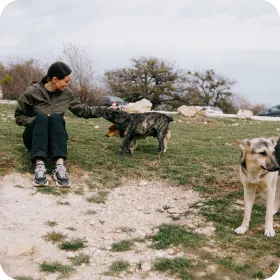
-
Крепкий сон
в кровати - 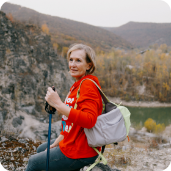
- 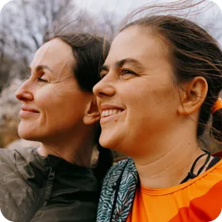
- 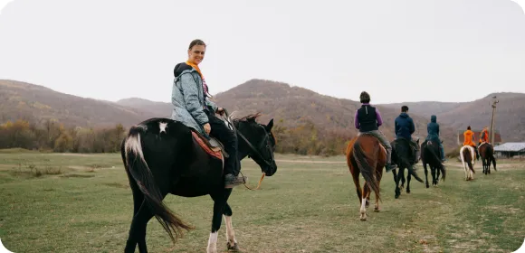
-

Горные
маршруты -

Новые пейзажи
каждый день - 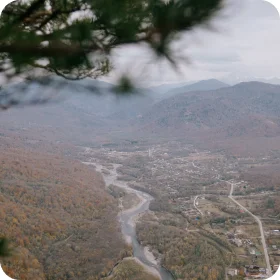
-
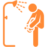
Теплый душ после
целого дня в пути - 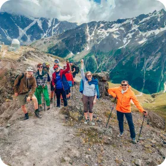
-

Обед под открытым
небом - 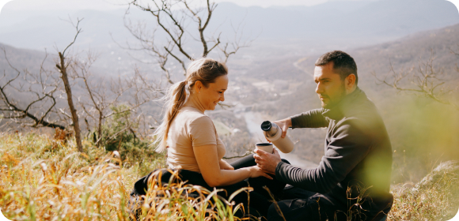
-
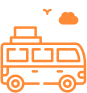
Трансфер до гостиницы и обратно
Наши отзывы
Маршруты и походы по Северному Кавказу
Часто задаваемые вопросы
-
Можно ли отправиться в поход по Кавказу с детьми?
+
Да, конечно! Наши походы по лагерям Кавказа организованы для семей и предлагают комфортные условия как для взрослых, так и для детей. Мы учитываем особенности детей и предоставляем безопасные маршруты, удобное жилье и питание. Так что отправляйтесь в поход с детьми и создавайте незабываемые воспоминания вместе!
-
Мне 60 лет и я хочу в поход! До какого возраста берёте в приключения?
+
Ограничения зависят от сложности маршрута, но бывают и другие факторы. Обязательно обсудите этот момент с координатором. В среднем верхняя граница для походников 60–70 лет, а дальше по согласованию с инструктором. Если вы бодры душой и телом, то для вас найдётся свой маршрут!
-
Зачем мне это надо?
+
В походах каждый находит что-то своё. Труженики жаждут отдыха, смены обстановки и тишины, которую можно прочувствовать только на природе. Активные, сильные и независимые едут за интересным отпуском и новыми впечатлениями. Куда до походов бесцельному валянию на курортных пляжах! Общительные хотят завести новых друзей или даже найти своё «долго и счастливо» — в приключениях сразу понятно, кто с тобой будет и в горе, и в радости. Семьянины желают провести время с детьми и сплотиться. Экстремалы бросают себе вызов, жаждут адреналина и хотят проверить себя на прочность. Ценители прекрасного желают восхититься дивной природой и увидеть уголки, недоступные тем, кто выбирает «всё включено». В заповедные места можно только прийти пешком, с рюкзаком за плечами! Кто-то уже давно «заболел» походами и не хочет останавливаться. А для кого-то походы — это и есть жизнь. Среди множества приключений на сайте каждый сможет найти себе вариант по душе!
-
Часто ли бывают привалы?
+
В пешем походе стандартная схема такова: на 45 минут ходьбы — 15 минут отдыха. Если дорога просёлочная и ровная — можно с песнями прошагать по ней два часа без остановки. Если на пути подъём — привалы-пятиминутки будут требоваться каждые 10–15 минут. Кроме того, ориентируемся мы всегда на самых слабых участников.
Наша команда
-
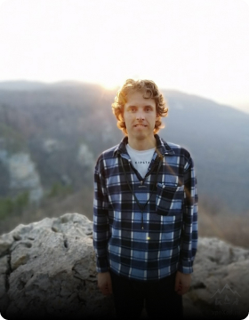
С детских лет ходит в походы, любимые места в горах — плато Лаго-Наки и окрестности. Ходил по знаменитому с советских времён маршруту номер 30. Поднимался на Фишт, Оштен и Пшеха-Су. Увлекается спортивным туризмом, велотуризмом, спортивным ориентированием, рогейном и экстремальными туристическими гонками. Участвовал в спортивном походе первой категории сложности, в гонках: «Марафон 100 км за 24 часа» и «Лагонакский марафон», в чемпионатах ЮФО и Краснодарского края по рогейну. С отличием окончил курсы в школе инструкторов туризма федерации спортивного туризма республики Адыгея. Имеет диплом «Инструктор детско-юношеского туризма». Сначала водил по горам своих друзей, с 2019 водит группы в Мезмае, Адыгее и Лаго-Наки. Характер нордический, не конфликтен, всегда готов прийти на помощь. Любит путешествовать и показывать самые красивые места маршрута, увлекается фотографией. Свободное время посвящает пешим тренировкам и разведке новых мест. Никогда не забывает о безопасности в походах.
Илья Троицкий
-
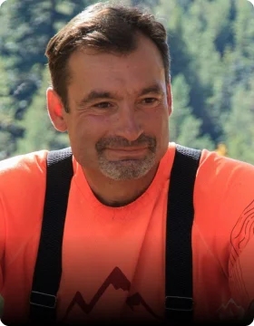
Горы любят тех кто любит Горы!
Сергей Луценко
-
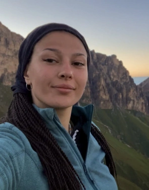
Эльвира прекрасно чувствует людей, позитивная, высокоорганизованная. Не даст сесть в "лужу" даже если очень тяжело. Благодаря навыкам игры в "Крокодил" сможет показать вершину если она прячется за облаками. С подросткового возраста любит походы. Из года в год интерес перерастал с любительского уровня в более профессиональный.
Эльвира Бойко
-
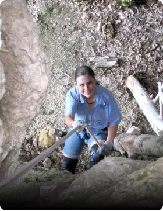
Люблю ходить в горы, узнавать новые места и новых людей. Я неконфликтный человек, способна к компромиссу. Хороший самоконтроль, обладаю здоровым чувством юмора, внимательна к безопасности, ответственна.
Мария Серебрякова
-
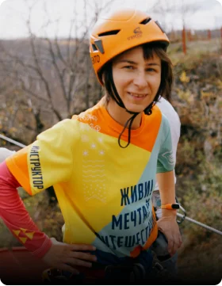
Считаю, что не обязательно тащить тяжелый рюкзак, чтобы увидеть много удивительных мест. Понимаю, что все туристы разные. С разным уровнем подготовки, ожиданий от тура. Готова помочь каждому участнику получить максимально приятные впечатления от похода. На протяжении всей жизни не прекращаю учится чему-то новому, стремлюсь получать различный опыт и знания. С удовольствием делюсь тем, что знаю.
Наталья Павлова
-
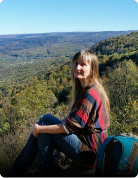
С детства мечтала быть путешественницей) Люблю горы, облака, леса, бескрайние степи. Люблю ходить по нехоженым дорожкам). А еще - встречи с новыми людьми, люблю вместе проживать приключения) Люблю растения и диких зверей, кое-что знаю про них (я биолог) Люблю в походах погружаться в историю, и совершать еще и путешествия во времени. А еще люблю детей) У меня их четверо)
Ольга Ишкова
-
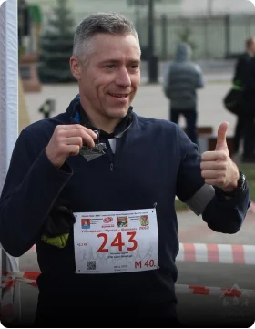
Прекрасный инструктор и замечательный человек – вдохновит вас на подвиг и с удовольствием залезет с вами на любую гору :-) У Сергея есть качества, которые сделают пребывание в походе спокойным, надежным и веселым: он ориентированный на людей, позитивный, все время в процессе, включенный, физически выносливый и высокоорганизованный. Любит свое дело и отдается ему целиком и полностью.
Сергей Нельзин
-
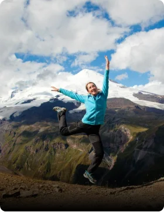
Очень любит походы и стремится поделиться этой любовью с другими! Заботливый, ответственный и позитивный человек. Любит петь, немного играет на гитаре. Если вы пойдете в поход впервые, то Оксана обязательно научит всему необходимому, а если уже бывали в походах, то всегда найдется интересная тема для беседы
Оксана Бессонова